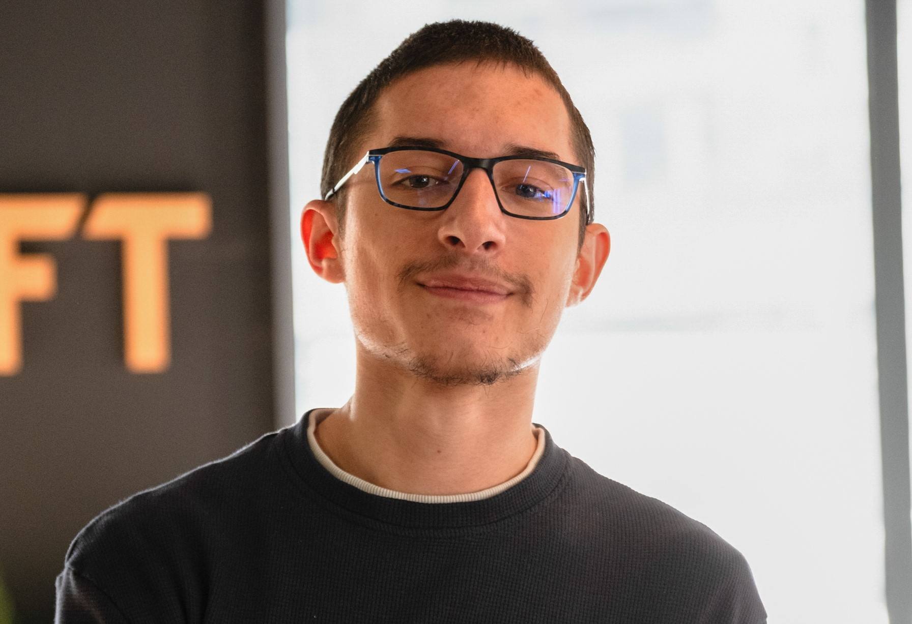

06 33 04 81 19
27400 Terres de Bord
Permis B + Voiture
Anglais: Courant
04/10/2005
Les jeux video
Les échecs
Le dessin
Le sport (vélo, escalade)
Adaptabilité: Capable de comprendre rapidement les bases de nouvelles technologies et de m'adapter à différents environnements de travail.
Curiosité: Je veux savoir comment les choses fonctionnent, et n'hésite pas à faire des recherches pour en comprendre le fonctionnement.
Actuellement en formation de dévloppeur full-stack dans l'école Zone01, je suis à la recherche d'une alternance afin de mettre mes compétences acquises en formation en pratique, et progresser dans le vaste monde du développement informatique.
Golang
JavaScript
HTML / CSS
Python
Git / Github
Docker
SQLite
Forum
Groupie Tracker
Ascii Art Web: - Page web qui transforme un texte en art ASCII. - Server en Go / Frontend en HTML/CSS. - Golang, HTML, CSS.
Tournament Bracket: - Application web pour créer des arbres de tournois et voir l'avancement des matchs en direct. - Golang, HTML, CSS.
World Cup Simulator: - Programme qui simule une coupe du monde des phases de poules jusqu'aux finales. - Affiche les resultats dans un fichier texte. - Golang.
Zone01: en cours
BTS Maintenance
Obtention de mon BTS maintenance à l'issue des 2 ans
Bac STI2D (Sciences et Technologies de l'Industrie et du Développement Durable)
Obtention de mon BAC Technologique